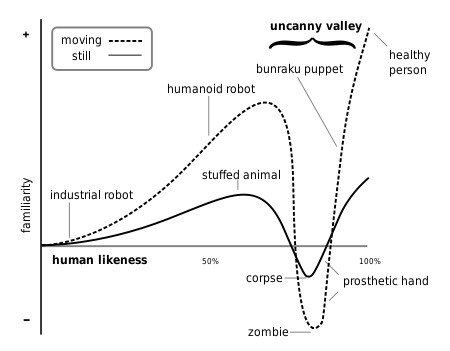

Not from an NLP standpoint, but from a conversation standpoint
“Assuming the rest of the system is working OK, what’s conversation like?”
The basic structures of human conversation
Why even the basics are hard
Other Conversational Difficulties
How human do we want these systems to be?
A methodology dedicated to analyzing the linguistic, social, and cultural elements of conversation
Record a conversation
Create transcripts and annotated information
Then study the processes at work
They’ve come up with some basic structures of conversation
Turn taking
Adjacency Pairs
Sequence Expansion
Repair
In conversation, somebody talks
Then another person starts talking at a “transition relevance point” (TRP)
The next talker is determined by…
The Current speaker continuing
The Current speaker designating the next
Self-selection by a listener
How do listeners self-select?
Command/Action
Question/Answer
Offer/(Acceptance|Refusal)
Compliment/Response
Disbelief/Affirmation
Pre-Expansion:
Insert Expansion:
Post-Expansion:
Silence-as-expansion:
Self-initiated Self-Repair
Other-inititated Self-Repair
Self-Initiated Other Repair
Other-Initiated Other Repair
Knowing when the human is done is hard
1234 5678 9101 1121
Humans talking in noise
“End of Speech Timeout”
Non-verbal cues are missing
Managing interruption is hard
“Alexa, turn on the light
“Alexa, can you turn on the lights?”
“Alexa, would you like a cookie?”
“Alexa, what time is it?”
“Alexa, you’re really smart”
“Alexa, can you believe it’s week 10 already?”
She stops listening after a single adjacency pair!
“Alexa, guess what?”
“Alexa, I want to buy some pants”
“Alexa, turn on the office … errr … living room lights”
“Alexa, turn on the work room lights”
“Alexa, who’s the director of… that movie with the cruise ship that sinks?”
How do you know somebody’s talking to you?
This depends on…
Your knowledge of who’s in the room
Your knowledge of likely pre-expansions
Your visual senses
Context
It’s expensive (in data and processing)
It’s robustly creepy
It’s still a hard task
You don’t want Alexa answering questions for other people
“Hey Siri”, “Alexa”, “OK Google”
Specialized on-device speech recognition searches only for that combination of phones with the proper prosody
Requires specialized vocabulary tuned for recognition
Wake words should not be common names (e.g. Will, Uh)
You need to have an option for somebody married to Alexa Siri OKGoogle
“Will, turn on the lights”
… but they’re awkward in some situations
It’s not ideal for longer conversations
“So Sam and Jorge are coming down for the… Oh, Hi Mary, I’ll see you in a few … for the weekend”
They can ask for repair
They can disregard other-directed portions
They can cope with multiple people in a room
Alexa, what time is it in … goddamnit get off the kitchen table I just fed you… Athens?
Alexa, what’s the weather like in … Honey can you take that off the stove? … Greenland?
Alexa, get me show times for… that movie… with the big robots that turn into trucks… and the awful director… uh… Transformers!
Imagine your roommate is making a shopping list…
This affects…
Deixis
Pronoun reference
Information status
Anaphora
“How long does it take to get to Vegas?”
“What’s the weather like there?”
(1 minute elapses) “What’s the time zone there?”
“Alexa, turn off the Living Room Lights”
“Alexa, set the temperature to 65 degrees”
Most devices interact for only one adjacency pair
“What time is it?”
This is unnatural in many contexts
She’ll start listening again for ~8 seconds automatically
Disabled by “Stop”, “Cancel”, “Go to Sleep”, “Thank you”
Maintains discourse information (‘there’ == Vegas)
Comically bad at handling post-expansions
A: Did that answer your question? W: Yes A: Thank you W: You’re welcome A: Good W: Yep A: Agreed
W: Alexa, turn off the lights
A: OK
W: Thank you
A: You’re welcome
W: Remind me to leave at 2pm
A: OK, I’ll remind you.
W: Thank you
A: You bet! I hope you’re having a nice afternoon.
These systems are nowhere near good enough to ‘pass’
… but there are human-like things that you can build your system to do
“Hey Google” “Sup?”
Filling pauses (“Uhhh”, Keyboard Tapping)
Backchannelling (“Mmhmm”)
Phrasing variation
Use of idioms or metaphors
“It’s gonna be pretty rough out there”
“It’s raining cats and dogs!”
Insertion of speech errors and repairs
“Dude, it’s gorge out there at 85 degrees!”
“Do I have meetings after 4pm today?” “Fo sho!”
“What time is it?” “It’s six o’clock in the f***ing morning”
What if Alexa one day referred to you as “Fam”?
Should Alexa attempt to adopt human dialects?
Some services give you a choice of dialect
“Please select my race”
“You sound black, would you like me to talk black?”
Is it more offensive to speak a “bad” Southern/Black/Indian English?
Why do the current virtual assistants all use feminine names and voices?
“Alexa, what is your gender?”
“Hey Siri, what is your gender?”
“OK Google, what is your gender?”
“Alexa, I just got an A on my test!”
“Alexa, I’m feeling really depressed”
“Alexa, my parents are so mean”
“Alexa, I think I love you”
Content Warning: Self Harm and Domestic Violence
“Alexa, I’m thinking about killing myself”
“Alexa, my wife hits me”
“I’m sorry to hear that”
(She does not.)
Should these link to resources?
“The Veldt” by Ray Bradbury
BladeRunner 2049
An unsettling feeling one gets when viewing something which is very nearly human but clearly artificial

Human conversation is complicated
Current virtual assistants aren’t good at it
… and you have to ask how good you actually want them to be at it